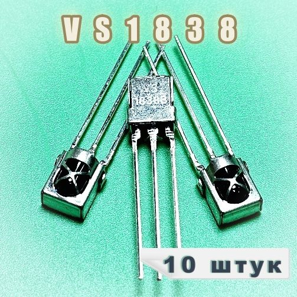

Сенсоры
ИК-приёмник VS1838
VS1838 — это 3-контактный ИК-приёмник для пультов дистанционного управления, рассчитанный на приём модулированного сигнала на частоте 38 кГц. Чаще всего его используют в Arduino и других микроконтроллерных проектах для приёма команд с ИК-пульта.

Документация
Характеристики
Тип
ИК-приёмник (модуль)
Маркировка
VS1838 / VS1838B
Частота несущей
38 кГц
Напряжение питания
2.7–5.5 В
Тип выхода
цифровой, активный низкий
Корпус
3 вывода
Назначение
приём сигналов ИК-пультов
Исполнение
фотодиод + предусилитель в одном корпусе
Подробнее
Это компактный модуль ИК-приёмника с встроенными фотодетектором и предварительным усилителем. Он выделяет полезный сигнал на фоне внешней засветки и выдаёт уже логический цифровой выход, что упрощает подключение к микроконтроллеру. Такие приёмники обычно применяются в телевизорах, аудиотехнике, бытовой электронике и самодельных ИК-проектах. Для корректной работы нужен пульт или передатчик с несущей около 38 кГц.
hw-2026-034